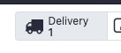
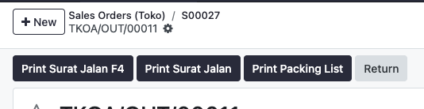
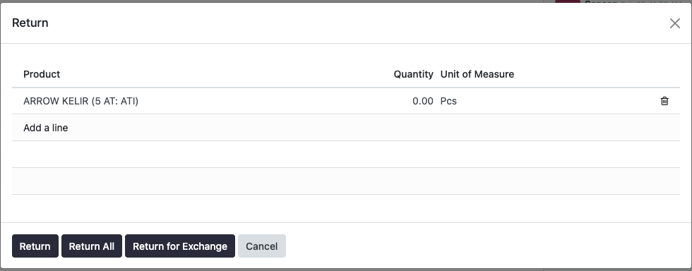
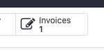
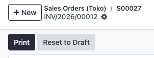
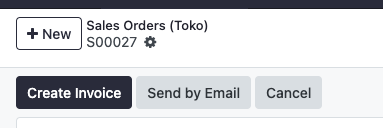
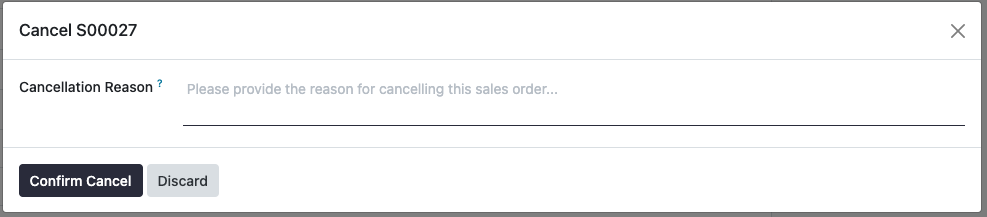

User Guide Asiantex
Panduan operasional lengkap untuk penggunaan sistem ERP Asiantex.
Purchasing
Pembuatan PO, Beli Barang, dan Maklon.
Manufacturing
Proses MO dan Produksi Barang.
Sales
Penjualan, Invoice, dan Penagihan.
Inventory
Replenishment, Scrap, dan Adjustment.
1. Proses Purchasing
A. Proses pembuatan PO untuk beli / restock barang
Klik Purchase → Orders → Purchase Orders
Klik New

Pilih Vendor
Isikan Vendor Reference jika ada referensi yang ingin ditambahkan pada PO, misal simpan no surat jalan vendor, dll

Pilih barang yang ingin dibeli, ada 2 opsi:
• Klik add a product, ketikkan nama item yang ingin dibeli atau
• Klik Catalog, pilih barang yang ingin dibeli, isikan quantity, klik Back to Quotation
Klik Confirm Order

Jika barang sudah diterima, klik tombol Receive Product / klik Receipt (box di tengah atas)

Klik Validate jika barang sudah diterima

Klik nomor PO pada kiri atas untuk kembali ke halaman PO
Jika ingin buat Bill, klik Create Bill

Isikan Bill Date

Klik Confirm

Jika Bill sudah dibayar, klik Pay, klik Create Payment
Jika ingin cetak Bill, klik Print
1. Proses Purchasing
B. Proses pembuatan PO untuk pemesanan kain ke maklon
Klik Purchase → Orders → Purchase Orders
Klik New

Pilih Vendor Setia Busanatex
Isikan Vendor Reference jika ada referensi yang ingin ditambahkan pada PO, misal simpan no surat jalan vendor, dll
Pilih barang KAIN GREY (pilih product sesuai jenis kain grey yang akan dikirimkan), caranya Klik add a product, ketikan nama item yang ingin dibeli

Klik Confirm Order

Jika kain grey sudah dikirimkan dari toko ke pabrik maklon / setia busanatex, klik Resupply (box di tengah atas)

Klik Validate jika barang sudah dikirim

Klik nomor PO pada kiri atas untuk kembali ke halaman PO
Jika dari pabrik maklon sudah mengirimkan kembali kain celup, klik tombol Receive Subcon pada masing-masing baris product Kain Grey:

• Isikan Nomor SJ
• Isikan Tanggal SJ
• Pilih Receive Type / tipe penerimaan full atau partial quantity
• Pilih product kain warna yang dikirimkan
• Pilih bill of material yang sesuai
• Isikan jumlah dalam kg untuk chemical warna & jasa celup
• Klik Confirm

Setelah confirm receive subcon, user akan diarahkan ke halaman manufacture order. User bisa print Work Order / Kartu Proses
Lakukan dan sesuaikan penerimaan untuk semua barang dari busanatex
Jika ingin buat Bill, klik Create Bill → Isi Bill Date → Confirm → Pay → Print
2. Proses Manufacturing
Proses penyelesaian MO untuk proses manufaktur barang
Klik Manufacturing → Operations → Manufacturing Orders
Klik dokumen Manufacturing Orders yang ingin diproses

Isikan quantity, berapa banyak barang yang akan dibuat
Klik Confirm

Pada bagian Component Status, pastikan statusnya Available yang menandakan semua bahan produksi tersedia, apabila Not Available, artinya ada barang yang kurang
Pada bagian Forecast Component, akan terlihat untuk tiap komponen tersebut apakah status itemnya tersedia
Selanjutnya, klik Produce All untuk memulai produksi. Produce All ini juga bisa diklik apabila status komponen barang tidak tersedia secara sistem, tetapi akan mengakibatkan stok pada sistem minus

Untuk melakukan print label, pada halaman MO, klik Print QR Code, isikan jumlah label yang ingin diprint, klik Print Labels

3. Proses Penjualan
A. Proses penjualan barang
Klik New
Isikan Customer. Ketik nama customer, jika customer belum ada klik create pada kolom yang tersedia
Pada bagian pricelist, pilih price list / harga dari produk yang dijual. Jumlah stok akan mengikuti juga pricelist yang dipilih, toko / pabrik

Pada bagian order lines, klik catalog untuk melihat daftar barang. Cari produk berdasarkan tipe / variant. Klik barang yang ingin dijual, lalu isikan quantity. Klik back to quotation pada kiri atas

Klik confirm

Apabila pada SO yang dibuat, ada barang yang tidak ada stoknya, maka akan tampil box konfirmasi. Disini bisa terlihat, untuk masing - masing barang yang akan dijual, berapa item yang dibutuhkan, berapa yang tersedia, berapa kurangnya.
Ada 2 opsi yang bisa dilakukan jika barang kurang:
- Klik Close, lalu edit sesuai quantity yang tersedia / delete barang yang tidak ada stoknya dari order lines, lalu klik confirm kembali
- Klik Confirm with Availably Items Only, untuk melanjutkan SO dengan barang yang ada saja, lalu sistem akan buat SO baru untuk sisa barang yang tidak tersedia stoknya
Klik Delivery pada bagian tengah atas → Klik Validate jika barang sudah siap dikirim


Print surat jalan / packing list jika dibutuhkan
Klik nomor SO di kiri atas untuk kembali ke halaman SO
Jika ingin buat Invoice, klik Create Invoice → Pilih Regular Invoice, klik Create Invoice → Confirm


Jika Invoice sudah dibayar, klik Pay → Create Payment → Print


3. Proses Penjualan
B. Pembatalan Sales Order
Pastikan Anda berada pada dokumen Sales Order yang ingin dibatalkan. Jika barang sudah divalidasi/dikirim, klik smart button Delivery.

Di dalam dokumen Delivery, klik tombol Return.

Akan muncul jendela pop-up. Pastikan product dan quantity sesuai, lalu klik tombol Return.

Kembali ke halaman dokumen Sales Order, klik smart button Invoices.

Buka dokumen Invoice, lalu klik tombol Reset to Draft.

Kembali ke halaman dokumen Sales Order, klik tombol Cancel pada bagian atas.

Masukkan alasan pembatalan pada kolom Cancellation Reason, lalu klik Confirm Cancel.

4. Proses Inventory
A. Proses pemesanan / restock barang dari pabrik
Klik menu Operations lalu pilih Replenishment

Cari / Ketik produk / variant yang ingin di restock
Pada menu ini, perhatikan kolom On Hand, Forecast, Min, Max, To Order:
• On hand : jumlah barang yang tersedia pada toko saat ini
• Forecast : perkiraan jumlah barang di toko, dikurangi barang yang akan dijual / dikirimkan ke customer
• Min & Max : jumlah minimal & maksimal stok barang dalam toko
• To Order : jumlah barang yang akan dipesan. Secara default, pada bagian ini akan terisikan selisih antara jumlah maksimal & jumlah barang di toko saat ini

Isikan jumlah barang yang ingin dipesan pada kolom To Order / biarkan sesuai jumlah yang terisi apabila sudah sesuai

Checklist setiap barang yang ingin dipesan dari pabrik
Klik Replenish pada bagian tengah atas, pilih Order
Selanjutnya, dokumen pemesanan akan terbuat. Tinggal tunggu dari pabrik kirim barang. Setelah dari pabrik kirim barang, pihak toko harus menerima barang tersebut dalam sistem: Klik Inventory → Operations → Receipts
Cari dokumen penerimaan, lalu klik dokumen tersebut → Klik Validate. Stok barang akan tersedia kembali pada sistem

4. Proses Inventory
B. Proses pengiriman pesanan pabrik ke toko
Cari dokumen pengiriman, lalu klik dokumen tersebut
Klik Validate

Print surat jalan / packing list jika dibutuhkan

Infokan ke orang toko bahwa barang sudah dikirim
4. Proses Inventory
C. Scrap & Adjustment
Proses scrap barang, untuk mengeluarkan barang dari sistem inventory, diluar dari transaksi biasa (seperti pemakaian solar):
Klik menu Operations → Scrap → New


Pilih product, isikan quantity
Pada scrap location, pilih: Virtual Locations/Internal Use
Isikan scrap reason, alasan pengeluaran barang jika dibutuhkan
Klik Validate

Proses inventory adjustment, mengubah quantity pada sistem secara manual tanpa melalui transaksi:
Klik menu Operations lalu pilih Physical Inventory

Klik New jika produk belum ada, jika produk sudah pernah dibuat sebelumnya pada halaman ini, bisa search

Isikan detail penyesuaian: Location, Product, Lot/Serial Number, Counted Quantity
• Location : lokasi barang
• Product : produk yang ingin disesuaikan
• Lot/Serial Number : apabila produk adalah hasil produksi dan ingin diberi kode produksi
• Counted Quantity : jumlah barang sebenarnya setelah dihitung

Klik Apply All
Isikan Inventory Reason, alasan dilakukan penyesuaian
5. Accounting & Tax
A. Proses pembuatan journal manual, untuk pencatatan transaksi kas toko / pabrik
Klik menu Accounting → Accounting → Journal Entries
Klik New

Isikan reference, referensi journal bila ada
Pada Journal, pilih buku mana yang akan digunakan
Pada Journal Items, isikan :
• Account : akun dari transaksi yang ingin dicatat
• Partner : kosongkan apabila tidak ada customer / vendor spesifik
• Label : keterangan transaksi
• Debit / Credit : nilai debit / credit transaksi

Klik Post
5. Accounting & Tax
B. Download XML e-faktur
Klik Accounting → Customers → Invoices
Cara 1 : Centang invoice yang ingin dicetak XML efaktur
Klik Action → Download e-faktur

Cara 2 : Buka dokumen invoice yang ingin dicetak XML efaktur, klik gear di kiri atas, pilih download e-faktur
File XML e-faktur yang sudah didownload kemudian dapat diupload di sistem coretax.
5. Accounting & Tax
C. Upload Coretax Excel
Download file excel dari coretax
Klik Accounting → Customers → Upload Coretax Excel

Klik upload your file → pilih file
Klik Validate

Pastikan mapping antara nomor invoice dan nomor faktur sesuai pada table Preview
Klik Update Tax Number untuk masukkan nomor faktur ke masing-masing invoice
5. Accounting & Tax
D. Proses Invoice Gabungan
Klik Accounting → Customers → Invoice Gabungan

Klik New

Pilih Customer

Pada tabel Invoice, klik add a line dan pilih invoice customer tersebut, centang invoice yang sesuai, klik select


Klik Confirmasi

Klik Print untuk mencetak invoice gabungan

6. Laporan Harian
A. Report Daily Sales
Klik menu Reporting lalu pilih Daily Sales

Secara default, report akan menampilkan data tanggal hari ini
Data yang ditampilkan hanya untuk order yang sudah ada invoice yang sudah posting
Jika ingin mengubah tanggal, klik Sales at Date, pilih tanggal, lalu klik Generate


6. Laporan Harian
B. Report Daily Stock
Klik menu Reporting lalu pilih Daily Stock

Secara default, report akan menampilkan data tanggal hari ini
Jika ingin mengubah tanggal, klik Inventory at Date, pilih tanggal, lalu klik Generate


Keamanan
Ganti password
Klik logo profile pada kanan atas → Klik preferences

Klik account security → Klik change password

Isikan password saat ini, klik confirm password
Isikan password baru, klik change password